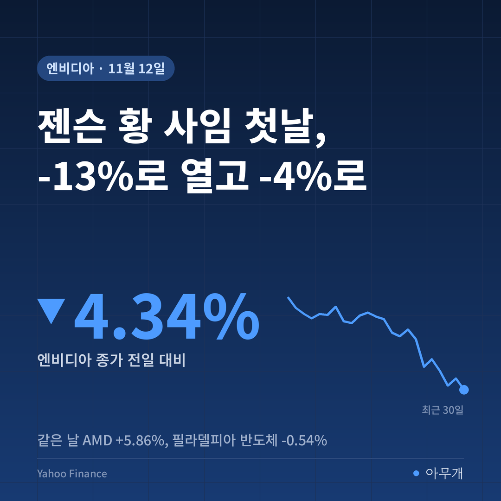
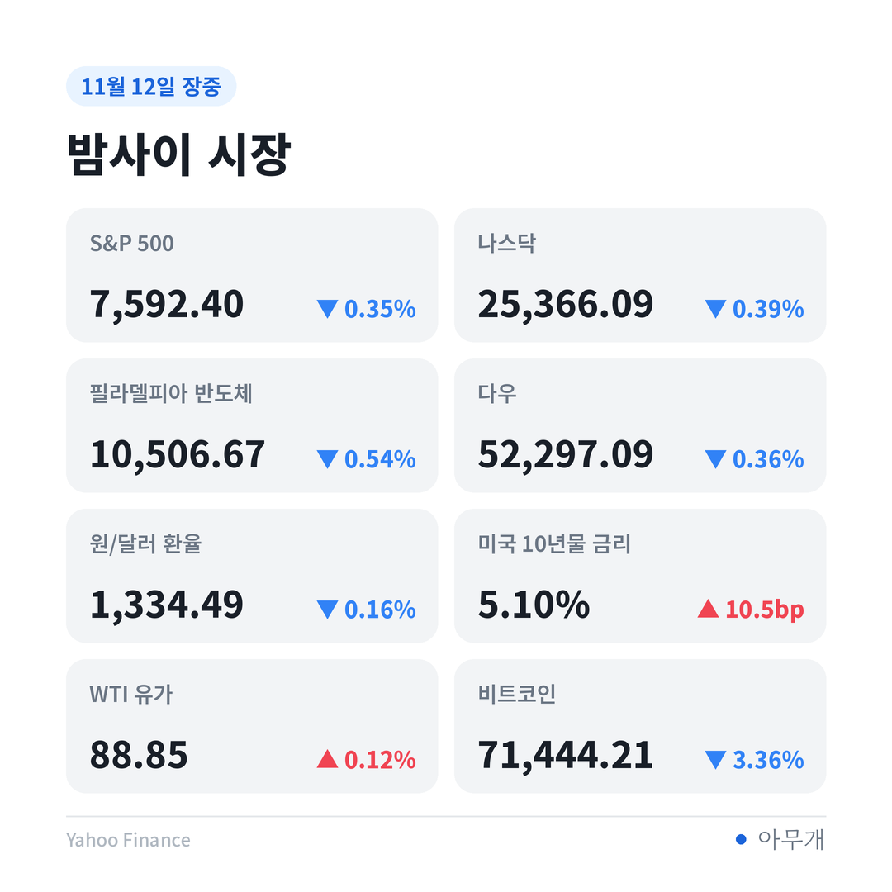
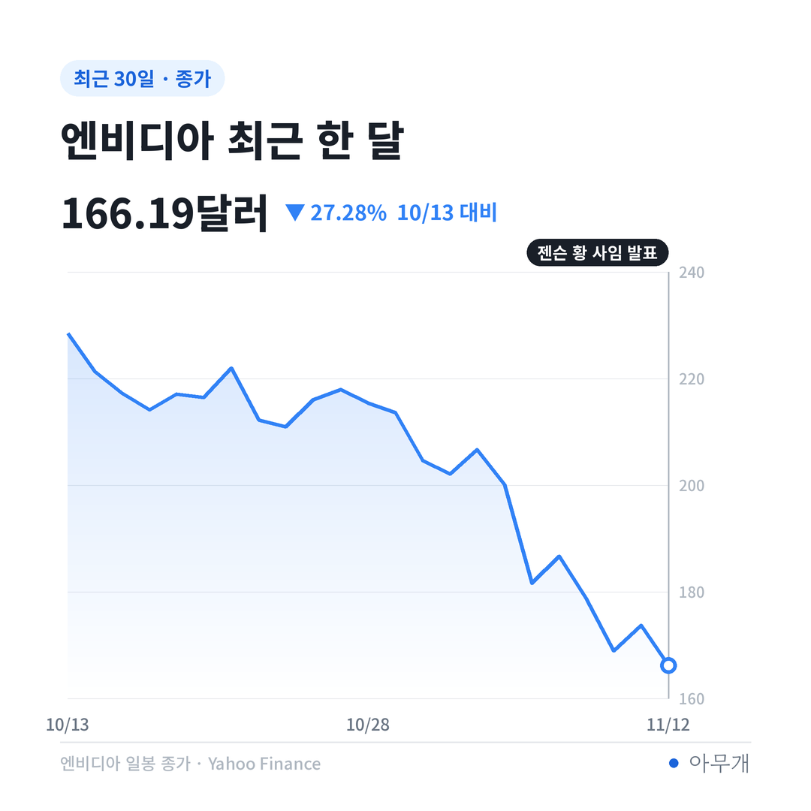
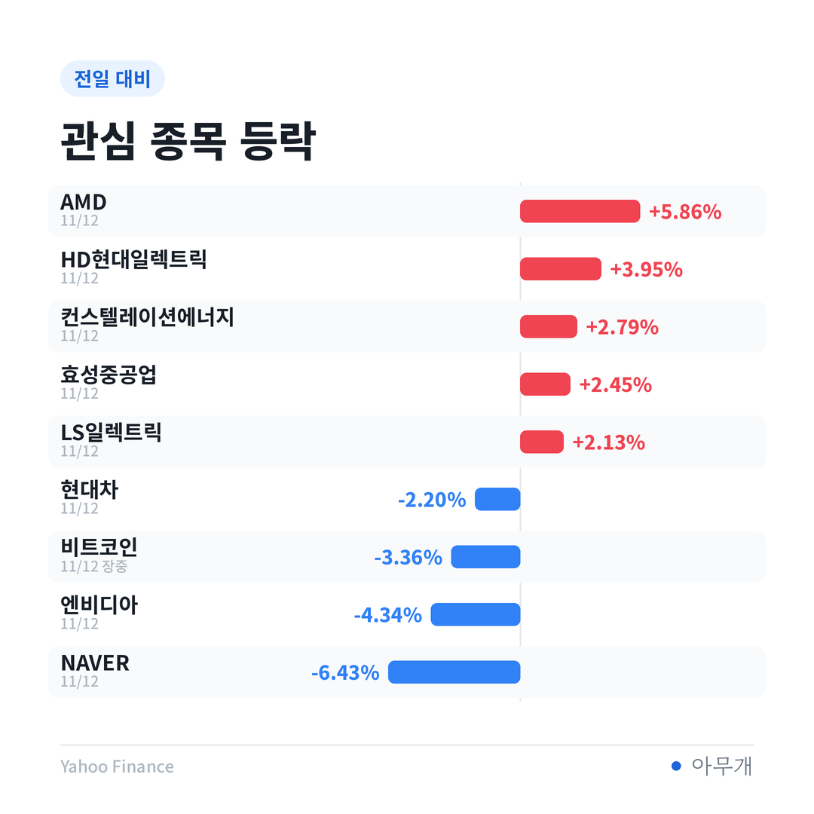

📷 사진 1 자리
메모 한 장에서 사임까지, 닷새
| 날짜(현지) | 내용 |
|---|---|
| 11월 8일(일) | 젠슨 황, 싱가포르 클라우드 업체 임원과의 혼외 관계 인정. 이사회는 조사 착수[1][3] |
| 11월 11일(수) 밤 | 뉴욕타임스(NYT), 직속 보고 관계인 사내 임원과의 두 번째 관계 보도[1][3] |
| 11월 12일(목) 개장 직전 | 이사회, 황 CEO의 사장·CEO·이사직 즉시 사임 발표. 크레스 CFO 임시 CEO, 하비 존스 이사를 회사 첫 이사회 의장으로 선임[1][2][3] |
| 같은 날 | 로이터, 또 다른 엔비디아 직원과의 세 번째 관계를 관계자 2명을 인용해 보도[4] |
어제 아침 글에서는 이사회 결정에 따라 갈리는 길을 셋으로 나눠 봤어요. 첫 줄에 적었던 '해임 또는 사임 발표'가 하루 만에 현실이 됐습니다. 1993년 공동 창업 뒤 33년 동안 한 번도 바뀐 적 없는 CEO 자리예요[1].
임시 CEO 크레스는 2013년 엔비디아에 합류해 CFO를 맡아 왔고, 그 전에는 시스코·마이크로소프트 등에서 재무 일을 했어요[1][3]. 실적 발표 콜에 늘 나오던 얼굴이라 투자자에게는 낯설지 않은 사람이에요. 이사회는 회사 안팎에서 정식 후임을 찾고 있어요[4].
이사회 발표에 있는 것, 없는 것
| 구분 | 내용 |
|---|---|
| ✅ 사실 | 황 CEO 즉시 사임, 크레스 임시 CEO, 존스 의장 선임[1][2] |
| ✅ 사실 | 첫 번째 혼외 관계는 본인이 인정[1][3] |
| 📰 보도 | 사내 임원과의 두 번째 관계(NYT)[1] |
| 📰 보도 | 또 다른 직원과의 세 번째 관계(로이터, 관계자 2명). 상대는 연락이 닿지 않음[4] |
| ⚠️ 의혹 | 첫 번째 상대의 중국 정보기관 연계. 미국 정보당국의 판단을 전한 보도[1][3] |
| 🗣️ 회사 입장 | 사임 이유는 밝히지 않음. 공로에 감사하고 운영·고객 약속·제품 로드맵은 중단 없이 이어진다고 함[1] |
발표문에 이유가 빠져 있다는 점은 기억해 둘 만해요. 이사회 조사가 어디까지 진행됐는지, 정보 유출 같은 회사 차원의 문제가 있었는지는 아직 공식 확인이 없어요.
-13%로 열고 -4.34%로 닫은 하루
엔비디아 전날 종가는 173.73달러였어요. 13.08% 내린 출발이면 시가는 약 151.01달러예요[2]. 장중 한때는 낙폭이 14%를 넘기도 했어요[3].
📷 사진 2 자리
| 지표 | 12일 종가 | 전일 대비 | 1주 |
|---|---|---|---|
| 엔비디아 | 166.19달러 | -4.34% | -8.49% |
| AMD | 585.30달러 | +5.86% | +44.73% |
| 필라델피아 반도체지수 | 10,506.67 | -0.54% | +16.60% |
| 나스닥 | 25,366.09 | -0.39% | +4.32% |
| S&P 500 | 7,592.40 | -0.35% | +3.25% |
| 미국 10년물 금리 | 5.103% | +10.5bp | +26.6bp |
종가 166.19달러는 시가 추정치보다 약 10.06% 높아요. 사임 소식이 나온 날인데도, 장 초반에 판 사람보다 그 뒤에 산 사람이 많았다는 뜻이에요.
그래도 긴 눈금으로 보면 상처는 그대로예요. 혼외 관계 메모가 나오기 전 마지막 거래일인 6일 종가 186.64달러보다 10.96% 낮고, 한 달 남짓 전 10월 6일 종가 239.24달러와 비교하면 30.53% 내려왔어요. 엔비디아 주가에서 이번 사태는 하루짜리 이벤트가 아니라 한 달째 이어진 하락의 끝부분이에요.
📷 사진 3 자리
반도체지수가 크게 안 빠진 까닭
엔비디아가 4% 넘게 빠졌는데 반도체지수는 0.54%만 내렸어요. 빈자리를 채운 건 경쟁사였어요. AMD가 5.86%, 브로드컴이 5.54% 올랐어요[2]. AMD는 엔비디아가 흔들리는 사이 자사 AI 칩이 점유율을 넓힐 수 있다는 증권사 의견 상향도 받았어요[5].
📷 사진 4 자리
AMD 1주 성적은 +44.73%, 엔비디아는 -8.49%예요. AI 칩을 사는 돈이 줄었다기보다 같은 업종 안에서 자리를 옮기는 모습입니다. 미래에셋증권은 시장이 이번 일을 AI 수요 둔화가 아닌 엔비디아 개별 위험으로 받아들였다고 봤어요[2].
반대로 엔비디아에 기대 커 온 회사들은 더 크게 빠졌어요. 엔비디아 칩으로 데이터센터를 지어 빌려주는 네오클라우드 업체 네비우스가 16.84%, 코어위브가 6.86% 내렸어요[2]. 네비우스는 연간 매출이 기존 전망 범위(30억~34억 달러) 하단에 그칠 것이라는 자체 실적 이유도 겹쳤어요[5]. 엔비디아는 이런 업체들에서 클라우드 서비스를 최대 360억 달러어치 사기로 약속해 둔 상태라, 'AI의 중앙은행'이라는 별명까지 붙었어요[6]. 경영 공백이 이 약속에 줄 영향이 네오클라우드 주가에 먼저 반영된 셈입니다.
주식만 보면 놓치는 신호도 있어요. 같은 날 미국 10년물 금리는 5.103%로 10.5bp(베이시스포인트, 금리 단위) 올랐어요. 30년물 국채 입찰에서는 팔리지 않아 딜러가 떠안은 비중이 11.4%로, 직전 10월 입찰 6.8%보다 커졌고 해외 수요를 보여 주는 간접 응찰 비중은 72.3%에서 68.1%로 줄었어요. 기술주가 내린 데는 젠슨 황 소식만이 아니라 장기 금리 부담도 함께 있었어요.
국내 반도체, 오늘 장의 출발선
국내 장은 사임 발표 전인 어제 이미 엔비디아 경영 공백을 일부 반영했어요.
| 종목 | 12일 종가 | 전일 대비 | 1주 |
|---|---|---|---|
| SK하이닉스 | 1,254,000원 | -1.80% | -0.79% |
| 한미반도체 | 181,900원 | -1.14% | +7.57% |
| 삼성전자 | 208,000원 | +0.97% | +3.23% |
| 코스피 | 5,342.73 | -0.61% | -0.76% |
밤사이 뉴욕에서 SK하이닉스 미국주식예탁증서(ADR)는 3.19% 내렸고 마이크론도 1.59% 빠졌어요[2]. MSCI 한국 증시 ETF는 1.64% 하락했지만 코스피200 야간선물은 0.78% 올라 신호가 엇갈려요[2]. 외국인은 어제까지 3거래일 연속 코스피를 순매수했고, 어제 순매수 규모는 3,705억원이었어요[2].
HBM(고대역폭 메모리)을 대는 SK하이닉스·삼성전자 입장에서 핵심은 엔비디아 주문이 이어지느냐예요. 이사회는 고객 약속과 제품 로드맵이 그대로 간다고 밝혔지만, 이를 숫자로 확인할 첫 자리는 다음 주 실적 발표예요[1][3].
다음 주 실적표가 가를 세 장면
| 시나리오 | 무엇을 보면 되나 | 예상되는 영향 |
|---|---|---|
| 실적·전망 유지 | 매출 전망, 크레스 임시 CEO의 공급 계획 설명 | '엔비디아 개별 위험'이라는 해석이 굳어질 수 있음. 국내 HBM 공급사에는 주문 걱정 완화 |
| 실적은 괜찮지만 후임 공백 길어짐 | 정식 CEO 선임 일정, 핵심 임원 이탈 여부 | 엔비디아만 할인받는 흐름이 이어지고 AMD·브로드컴과 격차가 벌어질 수 있음 |
| 조사 결과가 회사 문제로 번짐 | 이사회 조사 결과, 하원 증언 요구 대응 | 대중국 수출 규제 논의로 번지면 반도체 업종 전체가 영향권[7] |
첫날 주가가 낙폭 대부분을 되찾은 건 '사람은 바뀌어도 칩 수요는 그대로'라는 쪽에 시장이 표를 던졌다는 뜻이라고 봐요. 다만 이 표는 아직 숫자로 검증받지 않았어요. 그래서 다음 주 실적 발표가 사임 발표보다 더 큰 이벤트가 될 수 있다고 생각해요.
✍️ 직접 보거나 들은 경험이 있으면 위 문단에 한두 줄 덧붙이세요 (이 안내 줄은 지우기)
반대 시각도 있어요. 젠슨 황은 직속 보고 임원만 60명 가까이 둘 만큼 위계가 얕은 조직의 중심이었고, 경영학자들은 이 구조가 그 없이 오래 버티기 어렵다고 지적해요[8]. 이번 분기 숫자는 이미 정해진 주문의 결과라 괜찮게 나올 수 있어요. 공백의 비용은 몇 분기 뒤 제품 일정과 고객 협상에서야 드러날 수 있어요.
다음 주 화요일까지 달력에 적을 것
참고한 기사
이 글은 정보 제공 목적이며 투자 권유가 아닙니다. 투자 판단과 책임은 본인에게 있습니다.
시장 수치: Yahoo Finance 종가 기준, 국채 입찰은 TreasuryDirect(장중 시가·낙폭은 연합뉴스·CNBC 보도 기준)



